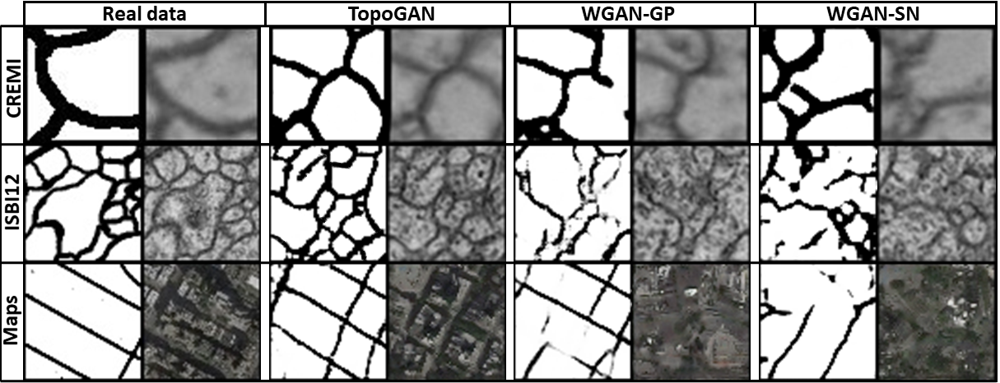

-
TopoGAN: A Topology-Aware Generative Adversarial Network Fan Wang, Huidong Liu, Dimitris Samaras and Chao Chen

European Conference on Computer Vision (ECCV), 2020, (Oral, acceptance rate 2.1%)Abstract Most existing generative adversarial networks (GANs) focus on generating realistic images with regard to CNN-based image features, but fail to preserve the structural properties of real images. This can be fatal in applications where the underlying structure (e.g., neurons, vessels, membranes, road networks) of the image carries crucial semantic meaning. In this paper, we propose a novel GAN model that learns the topology of the real images, i.e., connectedness and loopy-ness. In particular, we introduce a new loss that bridges the gap between synthetic image distribution and real image distribution in the topological feature space. By optimizing this loss, the generator produces images with the same structural topology as real images. We also propose new GAN evaluation metrics that measure the topological realism of the synthetic images. We show in experiments that our method generates synthetic images with realistic topology. We also highlight the increased performance that our method brings to downstream tasks such as segmentation.